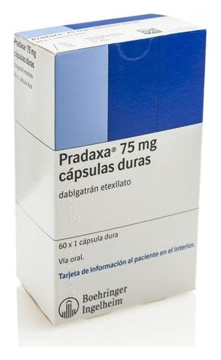

Pradaxa 75 mg Sert Kapsül, 60 Adet

Ne için kullanılır
KT · Bölüm 1PRADAXA, dabigatran eteksilat etkin maddesini içerir ve antikoagülanlar olarak adlandırılan bir gruba ait bir ilaçtır. Kanda pıhtı oluşumunda rol oyanayan bir maddeyi engelleyerek etki gösterir.
PRADAXA 75 mg, beyaz renkte opak kapak ve opak gövdeden oluşan sert kapsüller şeklindedir. Kapsül kapağı üzerinde Boehringer Ingelheim logosu ve kapsül gövdesinde “R75” ifadesi basılıdır. PRADAXA 10 ve 60 kapsül içeren blister ambalajlarda piyasaya
sunulur. Ambalaj büyüklüklerinin tümü piyasada bulunmayabilir.
PRADAXA, erişkin hastalarda, diz veya kalça eklemi değiştirme (replasman) ameliyatlarından sonra toplar damarlarda pıhtı oluşmasını engellemek için kullanılır.